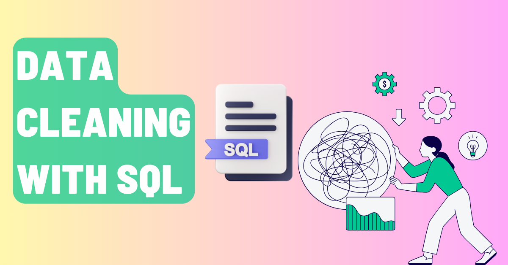
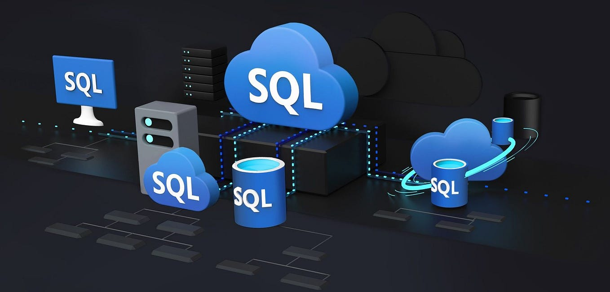
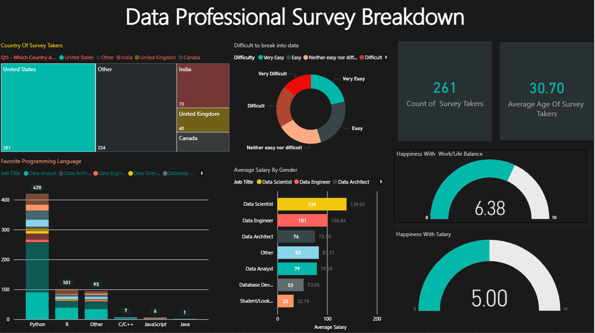
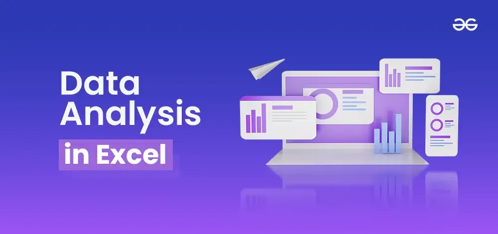
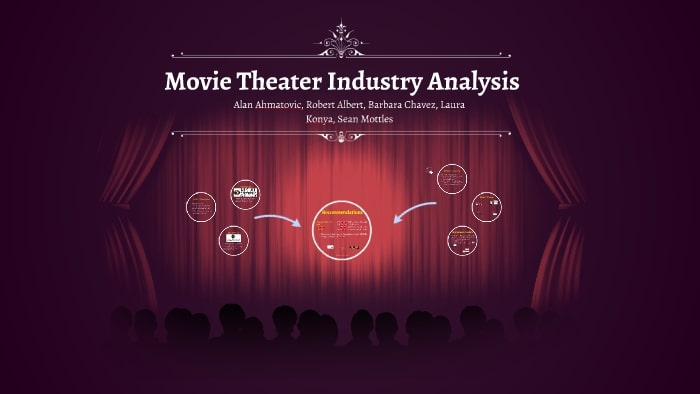
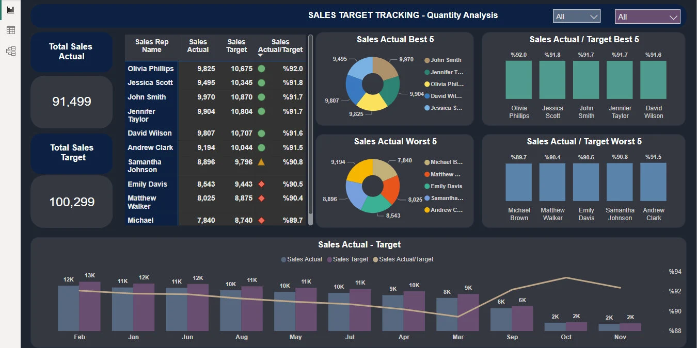

DATA CLEANING IN SQL
This project focuses on cleaning a layoffs.csv dataset using MySQL. The goal was to transform raw and inconsistent data into a clean, structured format ready for analysis.

This project focuses on cleaning a layoffs.csv dataset using MySQL. The goal was to transform raw and inconsistent data into a clean, structured format ready for analysis.


In this project, I performed exploratory data analysis (EDA) using SQL to extract meaningful insights from raw data. The main goal was to understand the structure, trends, patterns, and relationships within the dataset.

This project presents an interactive Power BI dashboard analyzing survey data from 630 data professionals worldwide. The dashboard explores key industry insights including country distribution, preferred programming languages, average salaries by job title, difficulty of breaking into the data field, and overall satisfaction with work-life balance and salary

This project demonstrates practical data analysis skills using Excel, including data cleaning, pivot analysis, and dashboard development. It highlights how demographic and economic factors influence consumer purchasing behavior
This project demonstrates how Pandas can be used for efficient data exploration, statistical analysis, and deriving insights from structured datasets. It highlights global population trends and differences across continents over time.

The analysis shows that financial factors such as production budget and audience engagement (votes) play a significant role in determining a movie’s gross revenue. Correlation analysis helped identify which variables have the strongest linear and monotonic relationships.

This project is a Sales Analysis Dashboard built to analyze shipment and revenue performance using business data. The dashboard focuses on: Monthly analysis of cookies shipped Total revenue aggregation Customer listing and segmentation Geographic sales distribution using a map visualization